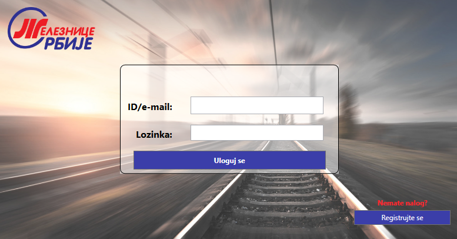
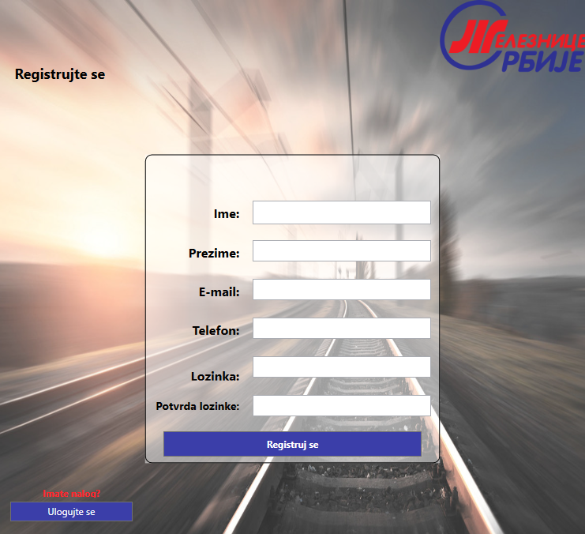

Na početnoj stranici aplikacije nalazi se forma za prijavljivanje korisnika. Forma za prijavljivanje korisnika sastoji se od polja za unos dodeljenog ID-a ili e-mail adrese i polja za unos lozinke. Kada korisnik unese potrebne podatke klikom na dugme "Uloguj se" pokreće se provera unesenih podataka, ako podaci nisu ispravni korisnik će biti obavešten. Ukoliko su podaci ispravni korisniku će biti prikazana naredna stranica u skladu sa ulogom koju ima u sistemu.

Sistem pomoći prilikom registracije i prijavljivanja
Prijavljivanje
Registarcija
Ukoliko klijent želi da koristi našu aplikaciju, ali nema validan nalog, može se registrovati. Klikom na dugme "Registrujte se", koje se nalazi na početnoj strani, klijentu se otvara forma za registraciju. Korisnik je dužan da unese sledeće podatke: svoje ime i prezime, validnu e-mail adresu, broj telefona, kao i lozinku koju mora da potvrdi dva puta. Klikom na dugme "Registruj se" izvršava se validacija unetih podataka i klijent biva obavešten o uspešnosti njegove registracije. Ako je registracija bila uspešna klijent se može prijaviti na svoj nalog.
